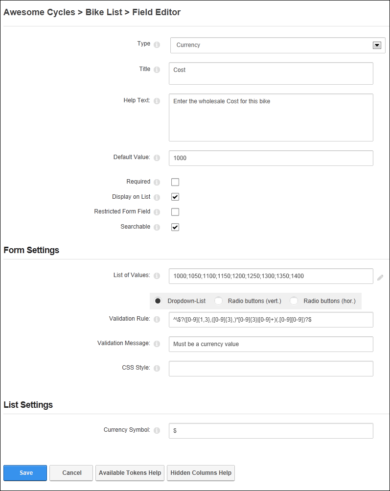
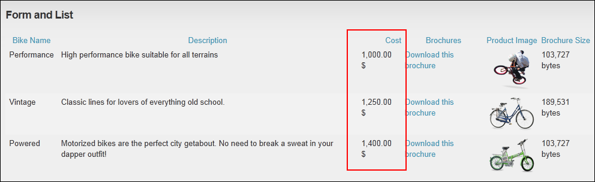

Adding a Currency Field
How to add a currency field to a form or list using the Form and List module. The currency field can be set to allow form or list editors to enter any currency amount or to select an amount from predetermined list. The chosen currency amount is then displayed on either the form or list along with the chosen currency symbol. This tutorial assumes you are currently adding a currency column to a form or list (See "Creating a Form or List") or editing the an existing currency record. See "Editing List or Form Columns"
Note: Both the "Default Value" and "List of Values" fields must be left blank to enable users to enter any currency value.
- In the Title text box, enter the title to be displayed on the form or list for this field.
- In the Help Text text box, enter a help message to assist users who are adding or editing the data for this field.
- In the Default Value text box, enter the default currency value for this field - OR - Leave blank to enable users to enter any currency value or to use the first value entered in the "List of Values" field.
- At Required, if this field must be completed to submit the form or add a record to a list - OR - if this field as optional. This is the default setting.
- At Display on List, if this column is visible on the list in the normal grid view. This is the default setting. - OR - to set the field as visible to Administrators only.
- At Restricted Form Field, if this column is only visible to users/roles who have been added to the "Edit Also Restricted Columns" permission (See "Setting Form Permissions") - OR - if the column is visible to all users. This is the default setting.
- At Searchable, if this column searchable using the Search Options configured for this module. This setting has no influence whether the field gets indexed for the side wide search - OR - if the column is not included in the module search. This is the default setting.
- Go to the Form Settings section.
- In the List of Values select from the following:
- Leave this field blank to display a text box that allows any value to be entered.
- Enter one or more values separated by a semi-colon ( ; ) (E.g. 10;15;20;25;30;35;40;45;50) and then select how the list options are displayed
- Dropdown-List: Display values in a drop down selection list. This is useful when there are a lot of values.
- Radio Buttons (Vert.: Display values in a vertical list with radio buttons.
- Radio Buttons (Hor.): Display values in a horizontal list with radio buttons.
- In the Validation Rule text box, enter the required input pattern using the "Regular Expression" language. See MSDN Library for more on expressions.
- In the Validation Message text box, enter the message to be displayed if the value entered is incorrect for the validation rule.
- In the CSS Style text box, enter the style that is applied to the text box or list control in form.
- Go to the List Settings section.
- In the Currency Symbol text box, enter the currency symbol that you want to display in the Table. E.g. EUR - OR - Leave this field blank to display the currency set for this site. See "Setting the Payment Processor"
- Click the Save button to save the field and return to the Form & List Configuration page.

Adding/editing a Currency field

Adding a currency record to a list on the Edit Record page

The currency column displayed in a list